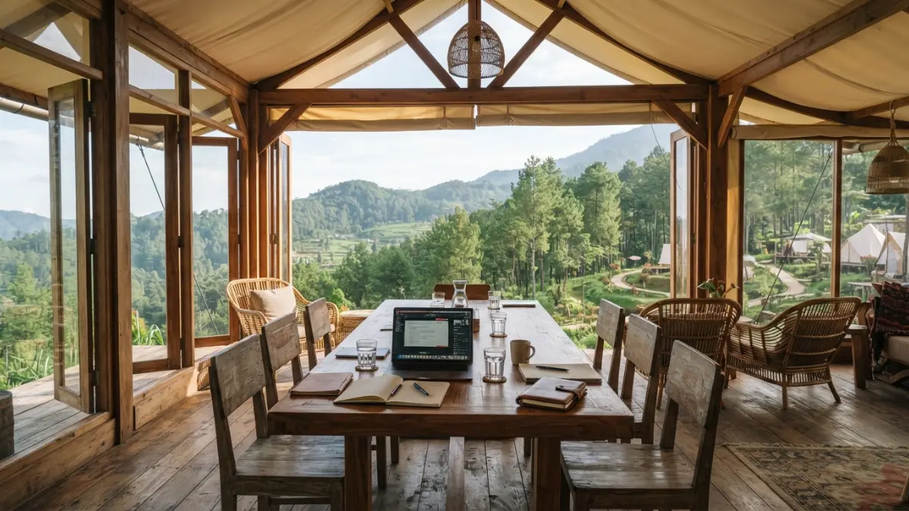

Cara memilih lokasi glamping untuk meeting di Batu adalah menilai akses, sinyal, fasilitas ruang kerja, kapasitas, keamanan, dan kebijakan pengelola, lalu mengunjungi lokasi sebelum memesan.
DAFTAR ISI
- 1. Mengapa Pemilihan Lokasi Menentukan Keberhasilan Meeting Glamping?
- 2. Apa Saja Kriteria Utama Lokasi Glamping untuk Meeting?
- 3. Bagaimana Cara Mengecek Sinyal, Listrik, dan Ruang Kerja Sebelum Memesan?
- 4. Kapan Waktu Terbaik Memesan Glamping untuk Meeting di Batu?
- 5. Daftar Pertanyaan untuk Pengelola Glamping Sebelum Memesan
- 6. Kesalahan Umum saat Memilih Lokasi Glamping untuk Meeting
- 7. Kesimpulan
1. Mengapa Pemilihan Lokasi Menentukan Keberhasilan Meeting Glamping?
Lokasi glamping menentukan keberhasilan meeting karena memengaruhi akses peserta, kualitas koneksi, kenyamanan istirahat, dan kemampuan acara berjalan sesuai rencana saat cuaca berubah.
Meeting glamping berbeda dari wisata biasa. Peserta datang untuk bekerja, sehingga fasilitas kerja lebih penting daripada pemandangan semata.
Lokasi indah yang tidak memiliki ruang beratap, colokan listrik memadai, atau sinyal yang layak dapat menghambat agenda.
Pemilihan lokasi juga memengaruhi aspek keselamatan. Jalan menanjak, penerangan malam, dan lantai licin saat hujan perlu dinilai sejak awal.
Penyelenggara bertanggung jawab atas kenyamanan semua peserta, termasuk yang memiliki keterbatasan fisik.
Karena itu, memilih lokasi glamping di Batu sebaiknya dianggap sebagai keputusan inti, bukan urusan terakhir.
2. Apa Saja Kriteria Utama Lokasi Glamping untuk Meeting?
Kriteria utama lokasi glamping untuk meeting adalah akses kendaraan, sinyal internet, ruang kerja beratap, kapasitas tenda, kelistrikan, kebersihan sanitasi, dan keamanan area.
- Akses kendaraan. Tanyakan apakah bus atau minibus dapat masuk, atau peserta harus berpindah kendaraan di titik tertentu.
- Ruang kerja beratap. Area bersama yang terlindung hujan dan angin penting untuk sesi inti.
- Kapasitas dan tipe tenda. Cocokkan jumlah tenda dengan komposisi peserta, termasuk kebutuhan tenda terpisah.
- Kelistrikan. Pastikan jumlah colokan dan daya cukup untuk laptop dan proyektor.
- Sanitasi. Periksa kebersihan, ketersediaan air hangat, dan jarak kamar mandi dari tenda.
- Keamanan. Cek penerangan, penjagaan, dan tempat menyimpan barang berharga.
Setiap kriteria sebaiknya diberi bobot sesuai tujuan acara. Workshop yang mengandalkan presentasi daring menuntut bobot sinyal lebih tinggi dibanding acara diskusi tatap muka.

Ruang bersama beratap di area glamping Batu yang digunakan untuk sesi rapat dan diskusi tim. (Ilustrasi)3. Bagaimana Cara Mengecek Sinyal, Listrik, dan Ruang Kerja Sebelum Memesan?
Cara mengecek fasilitas glamping sebelum memesan adalah mengunjungi lokasi, menguji sinyal dengan beberapa operator, memeriksa colokan, dan mencoba posisi duduk di ruang kerja yang akan dipakai.
Survei langsung memberikan gambaran yang tidak tampak dari foto promosi. Saat berkunjung, lakukan uji kecepatan internet di area ruang kerja dan di sekitar tenda, menggunakan lebih dari satu operator seluler bila memungkinkan.
Periksa pula ruang kerja secara praktis. Hitung apakah jumlah kursi dan meja cukup, apakah posisi peserta dapat melihat layar, dan apakah suara tetap jelas saat angin bertiup.
Jika survei langsung tidak memungkinkan, minta video singkat dan foto terbaru dari pengelola, serta rujukan dari klien lain yang pernah mengadakan acara serupa.
4. Kapan Waktu Terbaik Memesan Glamping untuk Meeting di Batu?
Waktu terbaik memesan glamping untuk meeting di Batu adalah jauh sebelum periode libur panjang, karena kunjungan wisatawan di Kota Batu meningkat tajam pada musim liburan.
Data menunjukkan lonjakan tersebut. Pemerintah Kota Batu mencatat 778.235 wisatawan selama libur Lebaran 2025, lebih tinggi dibanding 564.622 wisatawan pada periode serupa 2024.
Angka ini menggambarkan betapa ramainya kota pada momen libur panjang, yang dapat memengaruhi ketersediaan akomodasi dan kelancaran lalu lintas. antaranews
Bagi penyelenggara meeting, tanggal di luar libur panjang umumnya lebih mudah diatur. Pemesanan lebih awal juga memberi waktu untuk survei dan negosiasi.
Ketersediaan tanggal dan kebijakan harga tetap ditentukan masing-masing pengelola, sehingga konfirmasi tertulis tetap diperlukan.
5. Daftar Pertanyaan untuk Pengelola Glamping Sebelum Memesan
Pertanyaan penting untuk pengelola glamping mencakup kapasitas maksimal, fasilitas ruang kerja, kualitas sinyal, rencana saat hujan, konsumsi, dan aturan pembatalan atau perubahan jadwal.
- Berapa kapasitas maksimal peserta dan jumlah tenda yang tersedia?
- Fasilitas apa yang disediakan di ruang kerja, misalnya proyektor, layar, dan sound system?
- Bagaimana kondisi sinyal dan apakah tersedia Wi-Fi?
- Apa rencana pengelola jika hujan deras saat acara berlangsung?
- Apakah konsumsi tersedia, dan apakah bisa menyesuaikan alergi atau pantangan makanan?
- Bagaimana aturan pembatalan, pengubahan tanggal, dan pembayaran uang muka?
- Apakah ada petugas lokasi yang dapat dihubungi selama acara?
Catat semua jawaban secara tertulis. Penawaran yang mencantumkan rincian fasilitas membantu membandingkan beberapa lokasi secara adil.
6. Kesalahan Umum saat Memilih Lokasi Glamping untuk Meeting
Kesalahan umum saat memilih lokasi glamping adalah memutuskan hanya dari foto, mengabaikan akses jalan, tidak memeriksa ruang kerja, dan tidak membaca kebijakan pembatalan.
- Memutuskan dari foto. Foto promosi tidak menunjukkan kondisi sinyal, suhu malam, atau kebisingan.
- Mengabaikan akses jalan. Rute menanjak dapat menyulitkan kendaraan besar atau peserta yang membawa banyak perlengkapan.
- Tidak menilai ruang kerja. Ruang yang indah belum tentu nyaman untuk bekerja berjam-jam.
- Lalai membaca kebijakan. Aturan pembatalan dan perubahan tanggal memengaruhi risiko biaya penyelenggara.
- Tidak menyiapkan cadangan lokasi. Pilihan kedua membantu bila lokasi pertama tidak tersedia pada tanggal yang diinginkan.
Gambaran lengkap tentang konsep acara tersedia di panduan meeting gaya glamping di Batu.
7. Kesimpulan
Memilih lokasi glamping untuk meeting di Batu sebaiknya dimulai dari kebutuhan acara.
Tetapkan kriteria utama, survei lokasi secara langsung, uji sinyal dan ruang kerja, serta minta penawaran tertulis dari beberapa pengelola.
Pesan lebih awal untuk menghindari periode ramai, dan siapkan lokasi cadangan. Dengan langkah ini, risiko masalah teknis dan logistik pada hari acara dapat ditekan.